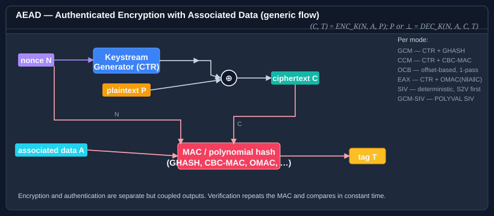

Class EaxModeTransform
Applies EAX mode to an underlying IBlockCipher, providing two-pass authenticated encryption with associated data (AEAD) per Bellare, Rogaway and Wagner (FSE 2004).
Inherited Members
Namespace: Bodu.Security.Cryptography
Assembly: Bodu.Security.Cryptography.dll
Syntax
public sealed class EaxModeTransform : IAeadBlockCipherModeTransform, IAeadTransform, IDisposableRemarks

EAX is the CTR + OMAC(N ‖ A ‖ C) instantiation of the generic AEAD shape above. Three independent OMAC
invocations are performed with a single-byte tweak t ∈ {0, 1, 2} selecting the input kind:
N' = OMAC_K^0(nonce)— authenticates the nonce and seeds the CTR counter.H' = OMAC_K^1(associatedData)— authenticates the AAD.C' = OMAC_K^2(ciphertext)— authenticates the ciphertext.
The authentication tag is T = N' ⊕ H' ⊕ C', and the keystream is generated by encrypting successive
big-endian increments of N' with the underlying block cipher.
OMAC_K^t(M) is defined as CMAC_K([t]_n ‖ M), where [t]_n is the integer t encoded as a
full BlockSize-byte big-endian block. All three invocations therefore share the same CMAC subkeys K₁ =
dbl(E(0ⁿ)) and K₂ = dbl(K₁), derived from the cipher once per instance.
The tag size is fixed at 16 bytes (the full OMAC output). The IV is the raw nonce: the class computes N'
internally. Ciphertext is output as C ‖ T (ciphertext then tag), consistent with the
IAeadBlockCipherModeTransform convention.
When to use EAX. Pick EAX when an unencumbered, two-pass AEAD with a flexible nonce length (the
OMAC-derived N' means EAX accepts nonces up to the cipher block size) is wanted — some embedded protocols and
historical industry standards require it. EAX is roughly half the throughput of GcmModeTransform on
commodity hardware but does not depend on Galois-field arithmetic and has no patent concerns. For new
general-purpose AEAD prefer GCM; for nonce-misuse resistance prefer GcmSivModeTransform or
SivModeTransform; for single-pass AEAD without GCM's catastrophic-on-reuse profile prefer
OcbModeTransform.
Nonce uniqueness is required. EAX is not nonce-misuse resistant. Two messages encrypted under the
same (key, nonce) share the same N' seed, so they share the same CTR keystream and an attacker can
recover P1 XOR P2; the per-message OMAC tag inputs also overlap, weakening authentication. Callers must
guarantee that every (key, nonce) pair is used at most once — either via a deterministic per-message counter
or a fresh random nonce drawn from a CSPRNG. If nonce uniqueness cannot be guaranteed, prefer
GcmSivModeTransform or SivModeTransform.
Examples
using System.Security.Cryptography;
using Bodu.Security.Cryptography;
using Bodu.Security.Cryptography.Extensions;
using IBlockCipher cipher = new AesBlockCipher(key);
byte[] nonce = RandomNumberGenerator.GetBytes(cipher.BlockSize / 8); // unique per message
using IAeadBlockCipherModeTransform eax = new EaxModeTransform(cipher, nonce);
byte[] sealed_ = eax.Encrypt(plaintext, associatedData: header);
using IAeadBlockCipherModeTransform dec = new EaxModeTransform(cipher, nonce);
byte[] recovered = dec.Decrypt(sealed_, associatedData: header);Constructors
| Name | Description |
|---|---|
| EaxModeTransform(IBlockCipher, byte[]) | Initializes a new instance of the EaxModeTransform class. |
Properties
| Name | Description |
|---|---|
| TagSize | Gets the authentication-tag size, in bits. |
Methods
| Name | Description |
|---|---|
| Decrypt(ReadOnlySpan<byte>, Span<byte>) | Decrypts |
| Dispose() | Releases the resources used by this instance and clears retained nonce and associated-data state from memory. |
| Encrypt(ReadOnlySpan<byte>, Span<byte>) | Encrypts |
| ProcessAssociatedData(ReadOnlySpan<byte>) | Processes associated data (AAD) that will be authenticated but not encrypted. Must be called before Encrypt(ReadOnlySpan<byte>, Span<byte>) or Decrypt(ReadOnlySpan<byte>, Span<byte>). |